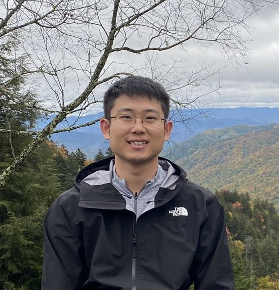

郎泉钧

quanjun.lang@psu.edu · Google Scholar · CV
I am an Assistant Professor of Mathematics at Penn State University. I am looking for motivated students interested in research in machine learning theory, scientific computing, and learning problems for dynamical systems. Prospective students are welcome to contact me by email. Students interested in joining the graduate program should apply through the Penn State Mathematics Ph.D. program.
Machine learning theory and scientific computing, with a focus on learning in dynamical systems, including interacting particle systems, quantum dynamics, and non-Markovian systems with memory. Emphasizes intrinsic low-rank structures, efficient model reduction, and rigorous analysis of error, sample complexity, and convergence of optimization methods; additional interests include data assimilation, inverse problems, and regularization.
Before joining Penn State, I was a William W. Elliott Assistant Research Professor of Mathematics at Duke University, where I worked with Professors Jianfeng Lu and Jonathan Mattingly. I completed my Ph.D. in Mathematics at Johns Hopkins University, where I was fortunate to be advised by Professors Fei Lu and Yannick Sire.